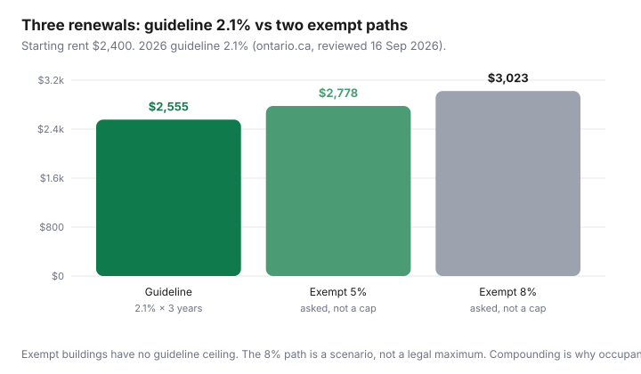

Housing · Canada
Rent-controlled vs exempt units in Ontario: how to spot which you’re applying for
Two one-bedrooms on the same street can cost the same this month and diverge by hundreds of dollars a year later. In Ontario, that fork is often the 15 November 2018 occupancy rule — not the granite, not the gym.
This is a hunter’s guide to spotting whether the unit you are applying for is likely bound by the annual rent-increase guideline (2.1% for 2026 on ontario.ca, reviewed 16 Sep 2026) or may be exempt from that cap. Landlords of exempt units must still give proper notice; they are not required to stop at 2.1%. This is not legal advice. Occupancy history can be messy. When money this large is at stake, the LTB materials and a licensed advisor beat a listing caption.
Disclosure: No natural affiliate product. Rental-search platforms are an offer type some households use to build comps. Saving Optimizer may earn a commission if we later add those links. We do not claim partnerships with Kijiji, PadMapper, or landlords. Official figures are from ontario.ca and Tribunals Ontario.
Key takeaways
- If the unit was not occupied for residential purposes on or before 15 November 2018, it may be exempt from the guideline. The landlord must still give at least 90 days’ written notice on the proper form (LTB guide, reviewed 16 Sep 2026).
- The 2026 guideline is 2.1%. It is a cap for most sitting tenants in covered units, not an automatic increase, and not a cap on what a new tenant can be asked when you move.
- Two similar listings can be a guideline building and a 2019 occupancy tower. Amenities are the marketing; occupancy date is the cost path.
- Ask in writing. Do not treat “rent controlled” in a Facebook title as a legal conclusion.
- An exempt unit can still be the right home for a two-year job, a below-market ask, or a building you would leave anyway. Price three renewals before you fall in love with the rooftop.
The Nov 15, 2018 occupancy rule in plain language
Ontario’s public LTB guide says: if the rental unit was not occupied for residential purposes on or before 15 November 2018, it may be exempt from the rent-increase guideline. The landlord must still give at least 90 days’ written notice of any increase using the proper form, but there is no guideline limit on the size of that increase.
Occupied for residential purposes is a fact about the unit, not about whether your landlord is a nice person. A brand-new condo first lived in in 2021 is the usual example. A 1970s walk-up that has been someone’s home for decades is the usual counter-example. Conversions, gut renovations, and “never rented before” claims are where people get surprised — those are fact patterns for the Board, not for a blog post to decide.
Guideline ≠ rent control forever: even in a covered unit, the guideline applies to your tenancy’s increases. When you leave, the landlord can generally ask the next tenant a market rent. Staying is how the 2.1% compounds in your favour. Moving is a market reset — see renewal negotiation before you treat a 2.1% N1 as a reason to vacate.
Why two similar listings can have very different long-term cost paths
Listing photos converge: quartz, in-suite laundry, a gym that looks like a hotel. The cost path does not. A sitting tenant in a covered unit facing a valid 2026 guideline increase on $2,400 pays $50.40 more per month if the landlord serves a proper N1 (ontario.ca’s own $1,000 example scales: 2.1% of $1,000 is $21). The same $2,400 in an exempt tower can be asked up 5%, 8%, or whatever the landlord thinks the market will bear — still with 90 days’ proper notice, still only once in 12 months in the usual case, but without the 2.1% ceiling.

Over three renewals the gap is a vacation. Over six it is a car payment. That is the unique Ontario angle: hunters are not choosing “nice vs cheap.” They are choosing a ruleset.
Questions to ask landlords and how to verify occupancy history carefully
- Email: “Was this unit occupied for residential purposes on or before 15 November 2018? If you believe it is exempt from the guideline, please say so in writing.”
- Ask which form they used last year (N1 vs N2) and for a redacted copy of the last increase notice if you are replacing a sitting tenant — many will refuse; the refusal is information.
- Building age is a clue, not proof. A pre-2018 building can still have an exempt unit (for example, a unit that was not residential then). A 2020 occupancy is a loud clue the other way.
- Municipal property records and condo registration dates can support a timeline. They do not replace the occupancy fact.
- If the answer is mushy and the rent is only “worth it” if increases stay at 2.1%, do not sign. Budget for exempt.
Do not harass current tenants in the hallway for legal conclusions. Do not treat Reddit as the occupancy register.
Guideline increases vs market resets when you move
For covered units, a lawful guideline increase needs 12 months since the last increase or the start of the tenancy, 90 days’ notice, and the proper form (usually N1). Above-guideline increases need Board approval — a different process, not this article.
When you move out of a covered unit, the next tenant’s rent is typically a market conversation. Your 2.1% protection does not travel with you to the new building. That is why “I’ll just move if they raise it” is an expensive sentence in a city where vacant asking rents and sitting rents have diverged. Statistics Canada’s Q2 2026 asking-rent series and CPI rent are not the same number; use the rent-vs-buy frame if the real question is whether to stop being a tenant at all.
Trade-offs: newer building amenities vs rent-control protection
New buildings sell quiet neighbours, elevators that work, and in-suite laundry. They often sell an exempt ruleset too. Price the gym at what you would pay a third-party gym, the concierge at zero unless you actually use packages every week, and the exemption at a 5–8% annual scenario — then see if the granite still looks cheap.
Older covered buildings sell mystery wiring, laundry rooms, and a cost path you can plan. They also sell landlords who still have to follow notice rules. Illegal extra fees are a separate cheat sheet: Ontario tenant fees.
Budget scenarios over three renewals
| After | Guideline 2.1% | Exempt 5% / yr | Exempt 8% / yr |
|---|---|---|---|
| Year 0 | $2,400 | $2,400 | $2,400 |
| Year 1 | $2,450 | $2,520 | $2,592 |
| Year 2 | $2,502 | $2,646 | $2,799 |
| Year 3 | $2,555 | $2,778 | $3,023 |
The year-3 gap between guideline and the 8% scenario is about $468/month. That is a transit pass, a grocery system, and a chunk of a car insurance bill. It is also still only a scenario: some exempt landlords ask guideline-like amounts to keep a good tenant. Hope is not a line in the budget. Put the 8% column in the spreadsheet and celebrate if they ask less.
When an exempt unit still makes sense
- Short, known stay: a two-year contract, a degree, a caregiver year. You will not be there for renewal three.
- Below-market ask: if the exempt rent is already $300 under every covered comparable, you can absorb a larger percentage before you catch up — still model it.
- You would move anyway: if the covered alternative is a basement you will flee, paying for a livable exempt unit can be cheaper than a miserable “protected” one plus therapy. Be honest.
- You are about to buy: an exempt lease you will break in 18 months is a parking spot for the FHSA runway, not a 10-year cost path.
If you sign exempt, negotiate what you can on day one (parking, storage, a written increase policy that is still not a legal cap) using the scripts in the renewal guide. The leverage is higher before you move the couch.
Sources & date stamps
- ontario.ca, “Residential rent increases” — 2026 guideline 2.1%; 90 days’ notice; 12-month rule (reviewed 16 Sep 2026).
- Tribunals Ontario LTB guide to the RTA — exemption language for units not occupied for residential purposes on or before 15 Nov 2018; N1/N2/N3 forms (reviewed 16 Sep 2026).
- Statistics Canada Quarterly rent statistics Q2 2026 (9 Sep 2026) — asking-rent context only; not your lease.
Frequently asked questions
What is Ontario’s 15 November 2018 rent-control rule?
Public LTB materials say a unit that was not occupied for residential purposes on or before that date may be exempt from the annual guideline. Landlords must still give proper 90-day notice. This is not a determination about a specific address.
What is the 2026 rent increase guideline?
2.1% for most covered units, published on ontario.ca. It is the usual maximum without Landlord and Tenant Board approval. It is not automatic; the landlord must serve proper notice.
Does ‘rent-controlled’ in a listing mean I am protected?
Not by itself. Ask in writing whether the unit was occupied for residential purposes on or before 15 November 2018. Building age is a clue, not proof.
If I move out of a guideline unit, does the next tenant keep my rent?
Generally no. The guideline limits increases for a sitting tenancy. A new tenancy is typically a market rent conversation. Moving is often a reset.
When is an exempt new-build still worth it?
Short stays, below-market starting rents, or when every covered comparable is a unit you would leave. Model 5% and 8% annual asks for three years before you sign.